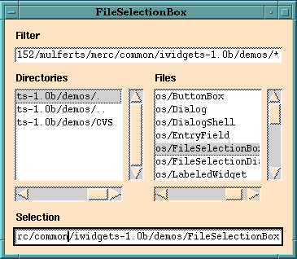

Attached is Ousterhout's paper, Scripting: Higher Level Programming for the 21st Century from IEEE Computer, 3/98. It's online at http://www.scriptics.com/people/john.ousterhout/scripting.html.
Attached are PDF slides of 4 intro talks.
fileselectionbox .fsb
pack .fsb -padx 10 -pady 10

Unfortunately, this is not installed at RPI, but you can download it to your own computers.
This little program is a(n inaccurate) stopwatch. It's in /campus/tcl/tk/4.0/common/lib/tk4.0/demos/timer (/dept/ecse/graphics/Tcl/Demos is a link to /campus/tcl/tk/4.0/common/lib/tk4.0/demos.)
It shows these features.
#!/bin/sh
# the next line restarts using wish \
exec wish4.0 "$0" "$@"
# timer --
# This script generates a counter with start and stop buttons.
#
# @(#) timer 1.4 95/07/18 16:21:44
label .counter -text 0.00 -relief raised -width 10
button .start -text Start -command {
if $stopped {
set stopped 0
tick
}
}
button .stop -text Stop -command {set stopped 1}
pack .counter -side bottom -fill both
pack .start -side left -fill both -expand yes
pack .stop -side right -fill both -expand yes
set seconds 0
set hundredths 0
set stopped 1
proc tick {} {
global seconds hundredths stopped
if $stopped return
after 50 tick
set hundredths [expr $hundredths+5]
if {$hundredths >= 100} {
set hundredths 0
set seconds [expr $seconds+1]
}
.counter config -text [format "%d.%02d" $seconds $hundredths]
}
bind . <Control-c> {destroy .}
bind . <Control-q> {destroy .}
focus .
This program, /dept/ecse/graphics/circle.tcl, does the following.
#! /bin/sh # the next line restarts using wish \ exec wish4.0 "$0" "$@" # Time-stamp: </dept/ecse/graphics/Tcl/circle.tcl, Sun, 1 Mar 1998, # 16:20:55 PST, wrf@speed.ecse.rpi.edu> # # This draws a filled circle. It changes color when you enter and # leave it. canvas .c -width 300 -height 300 pack .c set item [.c create oval 50 50 210 210 -width 5 -outline black -fill green] .c addtag point withtag $item .c bind point <Any-Enter> ".c itemconfig current -fill red" .c bind point <Any-Leave> ".c itemconfig current -fill green"
This program, /dept/ecse/graphics/drawing.tcl, demonstrates drawing several lines and ovals.
This, and most of the rest of the examples, were written by Sarah Jordan, who graduated from ECSE in S98.
#! /bin/sh
# The following line restarts wish \
exec wish4.0 -f "$0" "$@" -name "Drawing Demonstration"
#---------------------------------------------------------
# Sarah Jordan
# Senior Design Project
# Spring 1998
#
# The purpose of this program is to demonstrate how
# to draw vertical lines, horizontal lines, diagonal
# lines, and ovals.
#---------------------------------------------------------
# Create canvas for drawing
canvas .canvas -bg white -highlightthickness 0 -width 360 -height 360
pack .canvas
# Draw two horizontal lines
# Top line: Endpoints at (20,20) and (340,20)
# Bottom line: Endpoints at (20,340) and (340,340)
# Line format: x1 y1 x2 y2
set HL1 [ .canvas create line 20 20 340 20 -width 3 -fill black ]
set HL2 [ .canvas create line 20 340 340 340 -width 3 -fill black ]
# Draw two vertical lines
# Left line: Endpoints at (20,20) and (20,340)
# Right line: Endpoints at (340,20) and (340,340)
set VL1 [ .canvas create line 20 20 20 340 -width 3 -fill black ]
set VL2 [ .canvas create line 340 20 340 340 -width 3 -fill black ]
# Draw two diagonal lines
# Upper left to lower right: Endpoints at (20,20) and (340,340)
# Lower left to upper right: Endpoints at (20,340) and (340,20)
set DL1 [ .canvas create line 20 20 340 340 -width 3 -fill black ]
set DL2 [ .canvas create line 20 340 340 20 -width 3 -fill black ]
# Draw four ovals
# Northern oval: Sides at (170,70,190,110)
# Western oval: Sides at (70,170,110,190)
# Southern oval: Sides at (170,250,190,290)
# Eastern oval: Sides at (250,170,290,190)
# Oval format: left top right bottom
set OVAL1 [ .canvas create oval 170 70 190 110 \
-width 3 -outline black -fill green ]
set OVAL2 [ .canvas create oval 70 170 110 190 \
-width 3 -outline black -fill green ]
set OVAL3 [ .canvas create oval 170 250 190 290 \
-width 3 -outline black -fill green ]
set OVAL4 [ .canvas create oval 250 170 290 190 \
-width 3 -outline black -fill green ]
This program, from /campus/tcl/tk/4.0/common/lib/tk4.0/demos/browse, displays a scrolled list of the files in the specified directory (or the current directory by default). If you click on a name, then it calls your favorite editor, as listed in your envariable EDITOR (or xedit if EDITOR is unset), on that file.
It shows the following features.
#!/bin/sh
# the next line restarts using wish \
exec wish4.0 "$0" "$@"
# browse --
# This script generates a directory browser, which lists the working
# directory and allows you to open files or subdirectories by
# double-clicking.
#
# @(#) browse 1.6 95/07/18 16:21:36
# Create a scrollbar on the right side of the main window and a listbox
# on the left side.
scrollbar .scroll -command ".list yview"
pack .scroll -side right -fill y
listbox .list -yscroll ".scroll set" -relief sunken -width 20 -height 20 \
-setgrid yes
pack .list -side left -fill both -expand yes
wm minsize . 1 1
# The procedure below is invoked to open a browser on a given file; if the
# file is a directory then another instance of this program is invoked; if
# the file is a regular file then the Mx editor is invoked to display
# the file.
proc browse {dir file} {
global env
if {[string compare $dir "."] != 0} {set file $dir/$file}
if [file isdirectory $file] {
exec browse $file &
} else {
if [file isfile $file] {
if [info exists env(EDITOR)] {
eval exec $env(EDITOR) $file &
} else {
exec xedit $file &
}
} else {
puts stdout "\"$file\" isn't a directory or regular file"
}
}
}
# Fill the listbox with a list of all the files in the directory (run
# the "ls" command to get that information).
if $argc>0 {set dir [lindex $argv 0]} else {set dir "."}
foreach i [exec ls -a $dir] {
.list insert end $i
}
# Set up bindings for the browser.
bind all <Control-c> {destroy .}
bind .list <Double-Button-1> {foreach i [selection get] {browse $dir $i}}
This program, /dept/ecse/graphics/Tcl/menu.tcl, shows the following.
#! /bin/sh
# The following line restarts wish \
exec wish4.0 "$0" "$@" -name "Menubar Demonstration"
#---------------------------------------------------------
# Sarah Jordan
# Senior Design Project
# Spring 1998
#
# This program is a revised version of the program
# menu.tcl used in Graphics class last semester.
#---------------------------------------------------------
# Create container widget for menubar
# Put menubar at top and stretch horizontally
frame .menubar -bg white
pack .menubar -side top -fill x
# Create first button
menubutton .menubar.file -relief raised -text File \
-fg black -activeforeground blue -bg white -activebackground white \
-menu .menubar.file.m
# Define first pulldown menu and add buttons
menu .menubar.file.m \
-fg black -activeforeground blue \
-bg white -activebackground white
.menubar.file.m add command -label Load -command { puts {Pretending to load...} }
.menubar.file.m add command -label Save -command { puts { Not really saving...} }
.menubar.file.m add separator
.menubar.file.m add command -label Quit \
-command { puts {Really quitting}; "exit"}
# Make first button visible on menubar
pack .menubar.file -side left
# Repeat for second button
menubutton .menubar.edit -relief raised -text Edit \
-fg black -activeforeground blue -bg white -activebackground white \
-menu .menubar.edit.m
menu .menubar.edit.m \
-fg black -activeforeground blue \
-bg white -activebackground white
.menubar.edit.m add command -label Cut -command { puts {Cutting?...} }
.menubar.edit.m add command -label Paste -command { puts {Pasting!...} }
pack .menubar.edit -side left
# Create third button at right of menubar
menubutton .menubar.help -text Help \
-bg black -activebackground blue \
-fg white -activeforeground white \
-menu .menubar.help.m
menu .menubar.help.m \
-fg black -activeforeground blue \
-bg white -activebackground white
.menubar.help.m add command -label "A Little" \
-command { puts {You're beyond helping.}}
.menubar.help.m add command -label "A Lot" \
-command { puts {Error IEH2034I-qwe You are beyond helping.}}
pack .menubar.help -side right
# Create a text message below menubar
label .message -bg white -height 3 \
-text { This demonstrates a menubar and pulldown menus. }
pack .message
This program, /dept/ecse/graphics/Tcl/widgets.tcl, shows the following.
#! /bin/sh
# The following line restarts wish \
exec wish4.0 "$0" "$@" -name "Widgets"
#---------------------------------------------------
# Sarah Jordan
# Senior Design Project
# Spring 1998
#
# The purpose of this program is to learn about
# various widget types and how to use them.
#---------------------------------------------------
# Learn to use frames
label .framelabel -height 3 -text "This is a very boring frame:"
pack .framelabel
frame .frame -height 50 -width 50 -bg white
pack .frame
# Learn to use listboxes
label .listlabel -height 3 -text "This is a listbox:"
pack .listlabel
listbox .list -height 4 -bg black -fg white \
-selectbackground blue -selectforeground white
.list insert 4 Daddy Mommy Brother Sister
pack .list
# Learn to use checkbuttons
label .checklabel -height 3 -text "These are checkbuttons:"
pack .checklabel
checkbutton .eng -fg purple -bg white \
-activeforeground black -activebackground white \
-selectcolor black -text "Engineering"
checkbutton .arch -fg purple -bg white \
-activeforeground black -activebackground white \
-selectcolor black -text "Architecture"
checkbutton .sci -fg purple -bg white \
-activeforeground black -activebackground white \
-selectcolor black -text "Science"
pack .eng
pack .arch
pack .sci
# Learn to use menubuttons
label .menulabel -height 3 -text "These are menubuttons:"
pack .menulabel
menubutton .button1 -relief raised -fg red -bg white \
-activeforeground black -activebackground white -text "B1"
menubutton .button2 -relief raised -fg red -bg white \
-activeforeground black -activebackground white -text "B2"
pack .button1
pack .button2
label .quitlabel -height 3 -text "Quit the program:"
pack .quitlabel
button .quit -text "Quit" -fg white -bg black \
-activeforeground yellow -activebackground black -command { exit }
pack .quit
This program, /dept/ecse/graphics/Tcl/othello.tcl, is a start at an Othello game. It shows the following.
#! /bin/sh
# The following line restarts wish \
exec wish4.0 "$0" "$@" -name "Othello"
#-------------------------------------------------------------
# Sarah Jordan
# Senior Design Project
# Spring 1998
#
# The purpose of this program is to demonstrate a Tcl
# version of Othello (this game is NOT fully functional).
# Concepts included here are global variables, menu bars
# and buttons, switch statements, if statements, and loops.
#-------------------------------------------------------------
# Set global variables
global boardwidth
global boardsize
global player1
global player2
global color
set player1 1
set player2 2
set color $player1
# Create container for menubar
# Put menubar at top & stretch horizontally
frame .menubar -bg white
pack .menubar -side top -fill x
# Create first button
menubutton .menubar.play -relief raised \
-fg black -activeforeground blue \
-bg white -activebackground white \
-text Play -menu .menubar.play.m
# Define menu widget for first button
menu .menubar.play.m \
-fg black -activeforeground blue \
-bg white -activebackground white
# Add cascade menu to first button
.menubar.play.m add command -label "3 x 3 board" -command { createboard 3 }
.menubar.play.m add command -label "4 x 4 board" -command { createboard 4 }
.menubar.play.m add command -label "5 x 5 board" -command { createboard 5 }
.menubar.play.m add command -label "6 x 6 board" -command { createboard 6 }
.menubar.play.m add command -label "7 x 7 board" -command { createboard 7 }
.menubar.play.m add command -label "8 x 8 board" -command { createboard 8 }
.menubar.play.m add separator
.menubar.play.m add command -label "Exit Game" -command { exit }
pack .menubar.play -side left
# Put welcome message at top of screen
label .menubar.welcome -text "Welcome to Othello!" -padx 10 -bg white
pack .menubar.welcome -side left
#-------------------
# Create game board
#-------------------
proc createboard { size } {
global boardwidth
# Set up frame for board
switch $size {
3 { set boardwidth 190 }
4 { set boardwidth 210 }
5 { set boardwidth 250 }
6 { set boardwidth 290 }
7 { set boardwidth 330 }
8 { set boardwidth 370 }
}
frame .frame -width $boardwidth -height $boardwidth -bg white
pack .frame -anchor nw
# Create board
global boardsize
set boardsize $size
set color 0
for { set i 0 } { $i < $boardsize } { incr i } {
for { set j 0 } { $j < $boardsize } { incr j } {
button .b$i$j -bg white -activebackground white \
-highlightbackground black -command [ list board $i $j ]
}
}
# Initialize position values
set yspace 40
set xspace 40
set xmin 30
set xpos 30
set ypos 50
# Draw board
for { set i 0 } { $i < $boardsize } { incr i } {
for { set j 0 } { $j < $boardsize } { incr j } {
place .b$i$j -x $xpos -y $ypos
set xpos [ expr $xpos+$xspace ]
}
set xpos $xmin
set ypos [ expr $ypos+$yspace ]
}
# Is board even or odd size?
set N [ expr { $size % 2 } ]
if { $N == 1 } {
set LR [ expr { ($size-1)/2 } ]
} else {
set LR [ expr { $size/2 } ]
}
# Set starting positions
.b[ expr ($LR-1) ][ expr ($LR-1) ] configure -bg red \
-activebackground red -state disabled
.b[ expr ($LR) ][ expr ($LR) ] configure -bg red \
-activebackground red -state disabled
.b[ expr ($LR-1) ][ expr ($LR) ] configure -bg black \
-activebackground black -state disabled
.b[ expr ($LR) ][ expr ($LR-1) ] configure -bg black \
-activebackground black -state disabled
}
#------------------------------------
# Color board positions when clicked
#------------------------------------
proc board { row col } {
global color
global player1
global player2
global boardwidth
set oppcolor [ changecolor $color ]
if { $color == $player1 } {
.b$row$col configure -bg red -activebackground red -state disabled
} elseif { $color == $player2 } {
.b$row$col configure -bg black -activebackground black -state disabled
}
set color $oppcolor
set oppcolor [ changecolor $color ]
set adj [ adjacent $row $col ]
if { $adj == 0 } {
puts "ERROR - Your move must be adjacent to a piece of the\
opposite color."
.b$row$col configure -bg white -activebackground white -state active
set color $oppcolor
set oppcolor [ changecolor $color ]
}
# Now that we have checked adjacency, we must determine
# if player is able to flip a piece of the opposite color.
# Functionality should be inserted here.
}
#---------------
# Change colors
#---------------
proc changecolor { player } {
global color
global player1
global player2
if { $color == $player1 } {
set oppcolor $player2
} elseif { $color == $player2 } {
set oppcolor $player1
}
return $oppcolor
}
#---------------------------------
# Check adjacency to other pieces
#---------------------------------
proc adjacent { row col } {
global boardsize
set empty white
set adj 0
set left 0
set right 0
set up 0
set down 0
set upleft 0
set downleft 0
set upright 0
set downright 0
set color [ .b$row$col cget -bg ]
set firstrow [ expr ($row-1) ]
set firstcol [ expr ($col-1) ]
set lastrow [expr ($row+1) ]
set lastcol [expr ($col+1) ]
if { $firstrow < 0 } { set firstrow 0 }
if { $firstcol < 0 } { set firstcol 0 }
if { $lastrow >= $boardsize } { set lastrow [ expr ($boardsize-1) ] }
if { $lastcol >= $boardsize } { set lastcol [ expr ($boardsize-1) ] }
for { set i $firstrow } { $i <= $lastrow } { incr i } {
for { set j $firstcol } { $j <= $lastcol } { incr j } {
set boardcolor [ .b$i$j cget -bg ]
if { ($boardcolor != $empty ) && ($boardcolor != $color) } {
set adj 1
}
}
}
return $adj
}
Use Tcl/Tk to implement as many as you can of the X/Motif programs that I've prsented in class.
Copyright © 1998-9, Wm. Randolph Franklin. You may use my material for non-profit education and research, provided that you acknowledge me and preserve this notice.
Updated: Mon Sep 27 19:26:10 1999
URL:
http://www.rpi.edu/dept/ecse/graphics/Classes/13/index.html